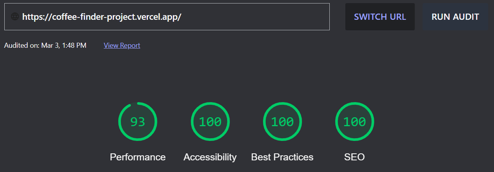

Hi, my name is Khai Vern Kok, a fullstack developer who loves exploring efficient ways to solve project requirements. Favourite web dev tools in 2021 were React, Vue, NextJS, NodeJS and Laravel. The increased responsiveness from optimizing using concepts such as dynamic programming, lazy-loading images/routes and page pre-rendering brings me joy.
Other than web development, my other hobbies include~ using Unity's engine to build games, machine learning with Tensorflow and Keras (familiar with ANN, CNN and RNN) and mobile apps with Android Studio.
View Resume
A website that shows available coffee stores near you with
just a simple click.
Each page is pre-rendered to provide a very smooth
experience. Besides that, you can upvote specific stores and
data will be persisted with the help of AirTable.
Other users will also have the latest vote count thanks to
the SWR package which helps to fetch new data depending on
the polling rate.
Web dev score?

Score generated using the official
web dev site.
Ever wanted to share where you've been to and maybe a
description of your experience?
Now you can with this simple website that comes with
authentication and address location using Google Maps SDK.
Possible UX improvements 🤔?
(p) 👉🏼 package
1. convert button to drag & drop for image uploading with
react-dropzone(p)
2. modify forms to use Formik(p) & Yup(p)
Implemented with React and NodeJS.
A simple blog project coded in TypeScript that showcase the
power of NextJS, given it's reputation as a React Framework
for production.
Tweaked each page to have server-side pre-rendering and
attached metadatas for better SEO. Each image is also loaded
lazily, no more unnecessary load times.🙂
Post is stored in markdown syntax and rendered to html using
react-markdown(p). For posts with code snippets,
gray-matter(p) is used.
Possible Upgrades 🤔?
1. contact messages are only stored on mongodb at the
moment. Could create a new page called FAQs and a response
feature.
A website where you can view the latest pets available for
adoption, built with NextJS.
Pet information are fetched from the PetFinder api and
sanitized so only valid names, descriptions, image and
more... are allowed.
Users can sign in to add specific pets to their favourite's
list for easy access in the future.
Possible Upgrades 🤔?
1. Filter to search for only dogs/cats, young/mature, etc...
2. Pagination system to move more than one page at a time.
Is there something I can help you with?
Click to send me an email